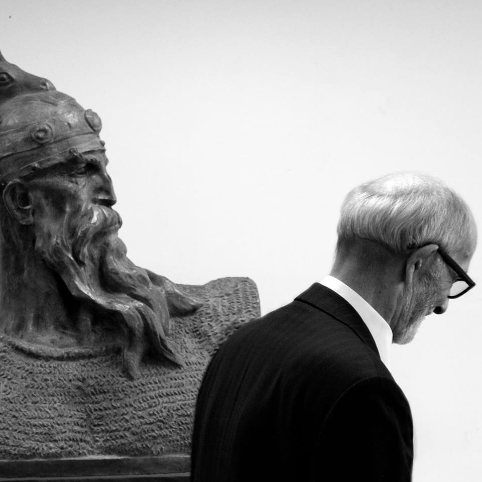
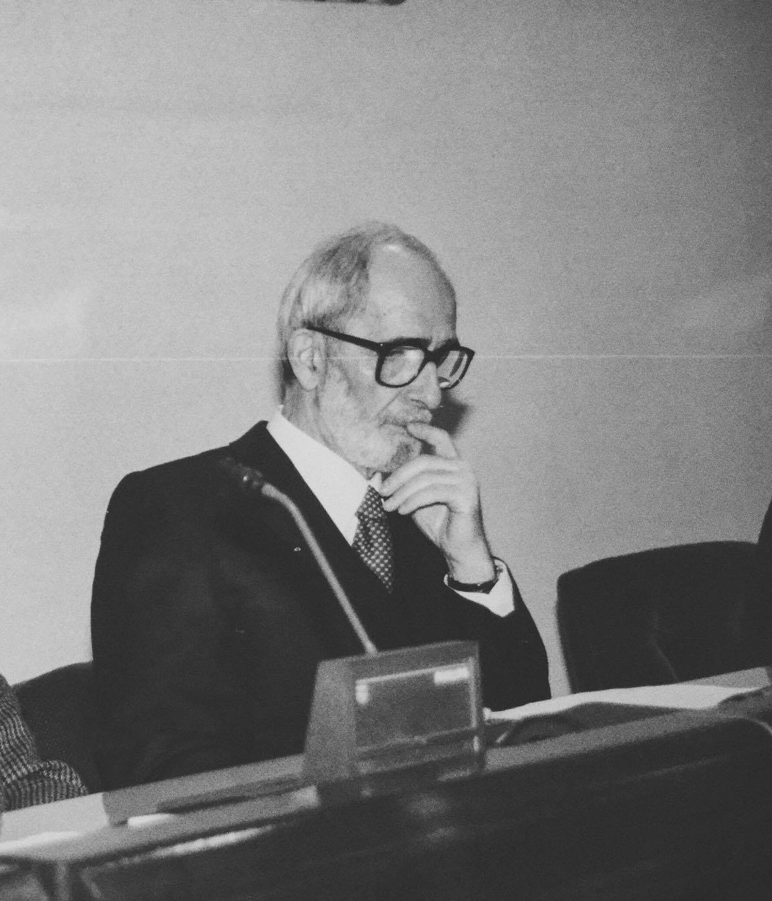
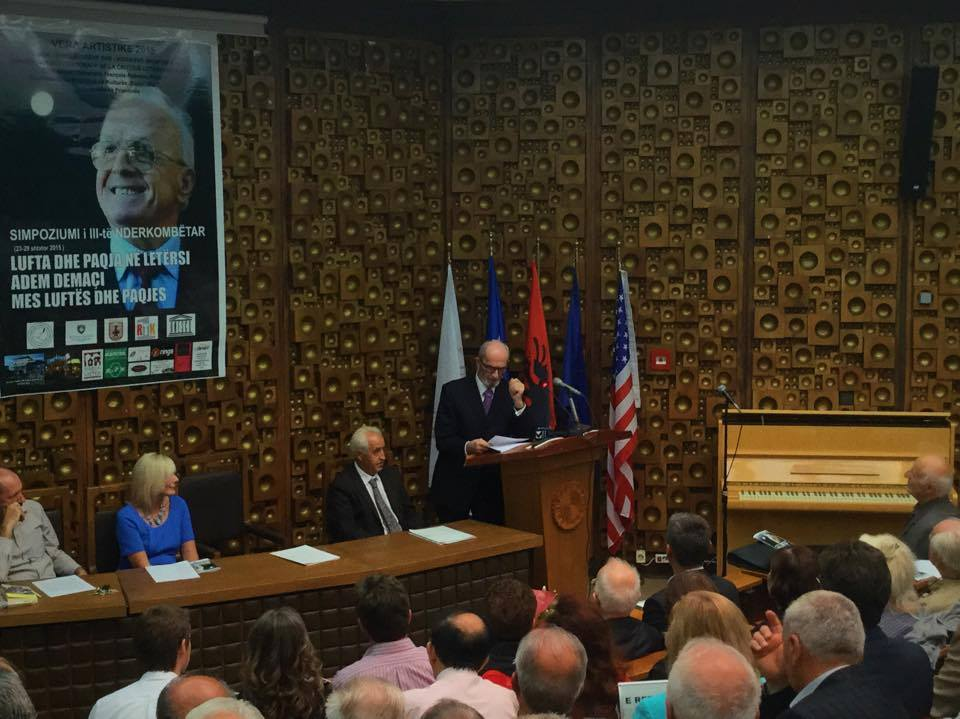
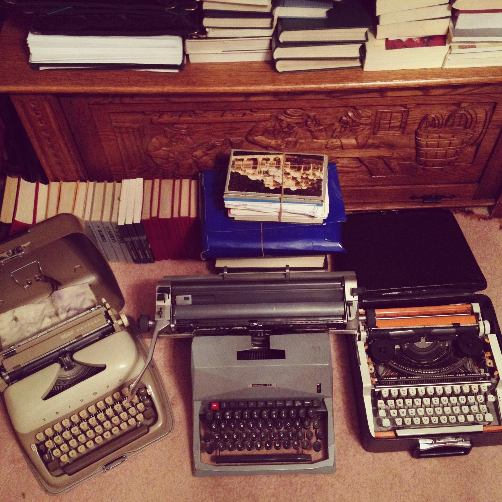
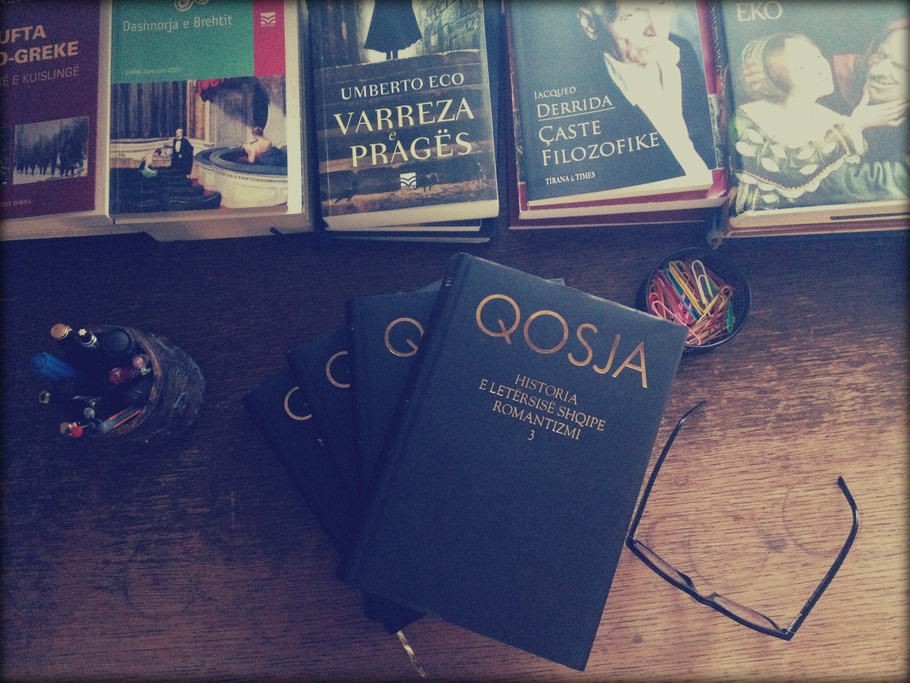

BESELAMI
Ç’është nderi! Ç’është nderi kur duhet
të vdesësh! Një fjalë e marrë, por e
madhe! Ngushëllim i vogël para fundit
të pa skaj. Njerëzit e mençëm janë
fatkëqij se të tjerët ndjehen të vegjël
skaj tyre. E vogëlsia e ka xhelozinë e
madhe dhe urrejtjen e pazgjedhur. Le
të bëhet i fortë dhe i pamëshirshëm
se me mëshirën nuk mbërrin askund,
s’ia del me askënd, s’fiton asgjë. Nuk
është kjo kohë e mëshirës dhe e
dashurisë. Kjo është kohë e sundimit
të dhunës. Me të i çel dyert, që s’i çel
mendja dhe i shtrin poshtë grushtet
e urrejtjes. Nuk ka tjetër ligj. Mëshira
është harruar kur në dorë janë marrë
mburoja, shigjeta dhe shpata. Me të
përcjellim vetëm të vdekurit.
Rexhep Qosja
Drama "Beselam pse më flijojnë" 1978


Terri i mbyll njerëzit nëpër shtëpi, por ua çel gojën qenve.
Tani mund të lehin sa të duan, mund t’i turren njëri–tjetrit,
mund t’u turren edhe qytetarëve që punojnë në ndërresën e natës,
por mund ta përhapin edhe sëmundjen e tërbimit, që është zbuluar
te tri dhelpra e tre qenë! E qentë po lehin, po turren dhe po e
përhapin tërbimin! Ajme! Kur shtohen qentë në rrugë pakësohen
njerëzit në qytet! Ajme!
(Pjesë nga romani “Një dashuri dhe shtatë faje” Rexhep Qosja)
“Besimi pa veprim është mashtrim i Zotit
dhe i njerëzve e veprimi është mësimi më
i mirë që mund t’i jepet një populli”.


Më ka rënë terri syve dhe jam ulur aty
ku kam qëlluar. Nuk e di sa kam mbetur
ashtu, por qenkam vonuar shumë! Nëpër
terr kam parë shumë njerëz: burra, gra,
nëna, motra, vasha, djem, foshnje, të
njohur dhe të panjohur; nëpër terr kam
dëgjuar kujën e tyre, që më ka sjellë
në vete.
Rexhep QOSJA
Drama, Sfinga e gjallë
Kam parë tepër shumë dhe kam dëgjuar
gjëra të pabesueshme. Njerëzit mund
të mendojnë se po trilloj.
Zhan Kokto, Dëshmitari i një kohe
